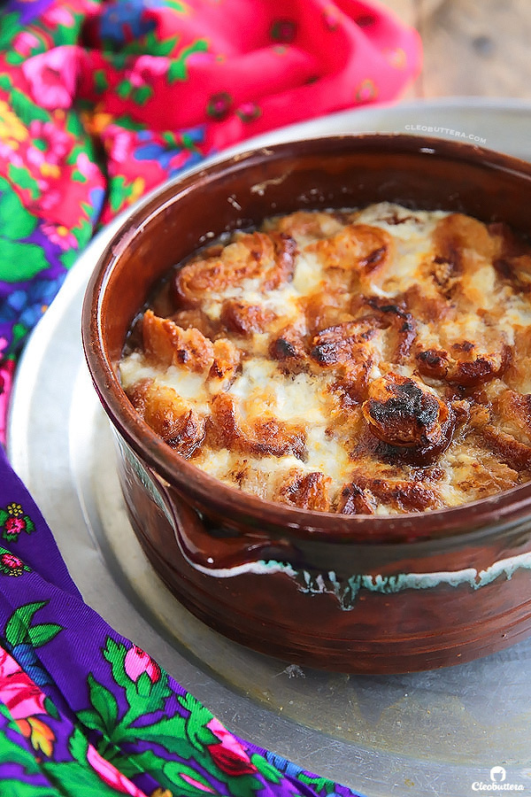

Um Ali

Description
An Egyptian classic as old as time, gets an upgrade with the use of delightfully delicious PALMIERS (lunettes) instead of regular ‘ol puff pastry or roaa (Egyptian flat bread). Oodles of crushed palmiers get mixed with nuts, sweetened hot milk, topped with whipped cream and broiled to perfection. The result…crunchy and caramelized on top, deliciously creamy and silky in the bottom.
Ingredients
- 500 g/1lb palmiers (also known as lunettes), storebought or homemade
- 1 liter/1 quart (4 1/4 cups) full fat milk, preferably organic buffalo
- 1/2 cup (100g) granulated sugar
- 250g/8oz (1 cup) fresh eshta balady (country-style clotted cream) or 1 cup heavy whipping cream, (whipped to medium peaks)
Steps
- Adjust the oven rack to medium position and preheat the oven's broiler to 200C/390F.
- In an oven safe baking dish, break in half 3/4 of the amount of palmiers, and arrange in layers. Set aside the remaining 1/4 of the palmiers. Add in the nuts, if using. I prefer to serve it on the side as not everyone likes nuts.
- In a medium saucepan, over medium-hight heat, stir together the milk and sugar, until the sugar dissolves, then bring to a boil.
- Pour the boiling milk mixture over the palmiers.
- Use the reserved 1/4 amount of palmers to top the surface of the milk-soaked palmiers. This will create an extra crunchy topping.
- Dot the surface of the dish with spoons of eshta. No need to spread it. If using whipped cream, evenly spread it all over to cover the entire surface of the dish.
- Place the dish under the oven's broiler until bubbling around the edges and the top turns golden brown; about 10 minutes. Keep a close eye over it as it might brown in less time.
- Serve right away, hot with assorted nuts on the side (if you haven't already added them in the dessert before baking)